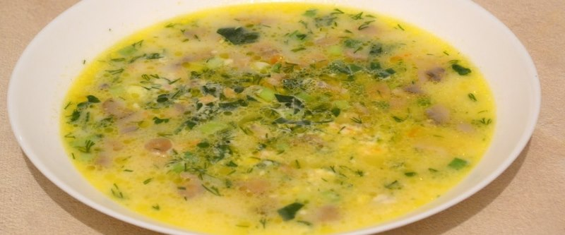

Сливочный суп с шампиньонами

1 луковицу и 1 морковь нарезать, обжарить на среднем огне, помешивая, 5-7 минут. 300 гр. шампиньонов вымыть и нарезать. Растопить на сковороде 25 г сливочного масла, выложить грибы и жарить-тушить их, помешивая, на среднем огне пока вся жидкость не испарится.
Выложить в кастрюлю подготовленные компоненты, очищенных и порезанных 3 картофелины и порцию риса. Налить 1 л. воды, посолить, варить при слабом кипении 15 минут. Затем выложить 1 плавленный сыр. Довести сливочный суп с шампиньонами до кипения и выключить.
Добавить зелень.